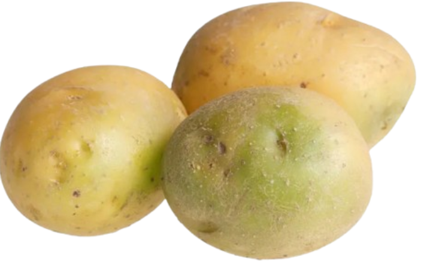

When you potatoes grow in the ground and when you harvest potatoes, the dense dirt around will crumble and become loose and airy. The airy earth will be already tilled and make planting the next crops very easy. I will also provid easy growth for later crop's roots. The poatoes plant's canopy will block sunlight which helps prevent weeds to grow.
After harvesting, the remaining plants/roots decomposese back into the dirt and the harvest is massive The overall positive is it helps the dit temporarily and not long term.
The negatives are that if you disturb the soil to much, you might destory the soil aggregates. Soil aggregates are clumps of sand, silt and clay stuck together by micorbial glues and plant roots so they resist erosion and resist being blown away. Potatoes require large amounts of nutrients to develop.Because potatoes take so much nutrient and don't return much the soil will need time to recover
There is also somehting called the Potato Blight which is a potato diesease. Its a disease that make potatoes completly unedible and turn into a foul mush.
Because of the many types of potaoes (3 examples above), you can make a big variety of poatoes like baked Agria potatoes. They contain lots of complex carbohydrates so you can get lots of energy. Potatoes are also the 3rd place staple crop just under wheat and rice. A single medium sized potato contains high levels of Vitamin C (20-27mg), Vitamin B6 (0.5mg), and Potassiun (620 - 890mg which is more than the 420mg form a banana).
Vitamin is good for repairing tissues, absorbing iron and boost your immune systems by fighting colds and infections. Vitamin B6 helps regulates moods, energy and keeps the circulatory system healthy. Poattsium helps you get less muscle cramps, levels blood pressure and makes sure your cells are hydrated.

There are some negatives to cooking potatoes which they take an hour to boil big potatoes and some vitamins are sucked into the water. The soilution is to steam, microwave, or roast potatoes.If poatoes are stored for too long, poatoes become green and toxic due to the Solanine. Solanine can causes nausea, headaches and/or stomach cramps.
Potatoes rely lots on seasoning to add flavour like butter, sour cream, cheese or frying oil and makes the Potatoes more unhealthy. The potato starch breaks down very quickely into sugar when you digest it. Plain boiled or mashed potatoes have a high Glycemic Index (GI), causing fast surges in blood sugar levels if eaten without protein, healthy fats, or extra fiber.